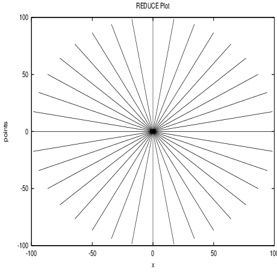
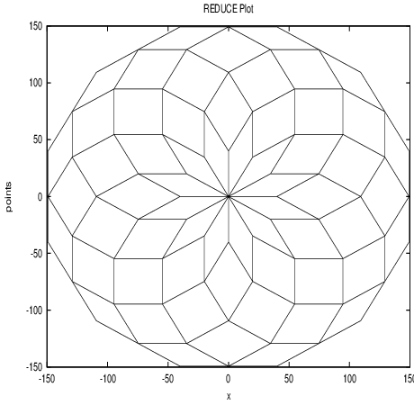
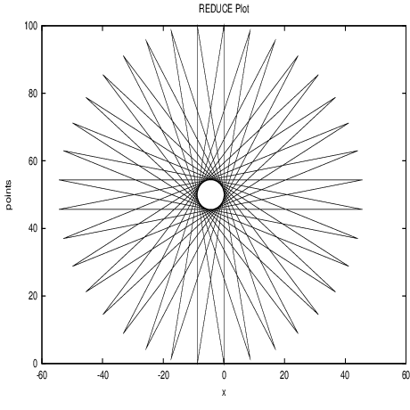
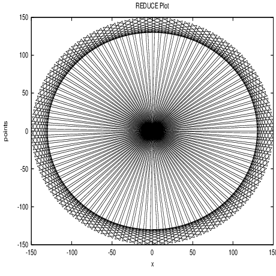
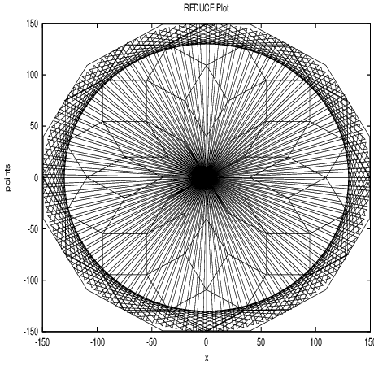

This procedure can then be part of a longer chain of commands:
This procedure can then be part of a longer chain of commands:
| Up | Prev | PrevTail | Tail |
Turtle Graphics was originally developed in the 1960’s as part of the LOGO system, and used in the classroom as an introduction to graphics and using computers to help with mathematics.
The LOGO language was created as part of an experiment to test the idea that programming may be used as an educational discipline to teach children. It was first intended to be used for problem solving, for illustrating mathematical concepts usually difficult to grasp, and for creation of experiments with abstract ideas.
At first LOGO had no graphics capabilities, but fast development enabled the incorporation of graphics, known as “Turtle Graphics” into the language. “Turtle Graphics” is regarded by many as the main use of LOGO.
For references, see [PZ97, LM94].
Main Idea: To use simple commands directing a turtle, such as forward, back, turnleft, in order to construct pictures as opposed to drawing lines connecting cartesian coordinate points.
The ‘turtle’ is at all times determined by its state {\(x\),\(y\),\(a\),\(p\)} – where \(x\),\(y\) determine its position in the (\(x\),\(y\))-plane, \(a\) determines the angle (which describes the direction the turtle is facing) and \(p\) signals whether the pen is up or down (i.e. whether or not it is drawing on the paper).
Some alterations to the original “Turtle Graphics” commands have been made in this implementation due to the design of the graphics package gnuplot used in REDUCE.2
It is not possible to draw lines individually and to see each separate line as it is added to the graph since gnuplot automatically replaces the last graph each time it calls on the plot function.
Thus the whole sequence of commands must be input together if the complete picture is to be seen.
This implementation does not make use of the standard turtle commands ‘pen-up’ or ‘pen-down’. Instead, ‘set’ commands are included which allow the turtle to move without drawing a line.
No facility is provided here to change the pen-colour, but gnuplot does have the capability to handle a few different colours (which could be included later).
Many of the commands are long and difficult to type out repeatedly, therefore all the commands included under ‘Turtle Functions’ (below) are listed alongside an equivalent abbreviated form.
The user has no control over the range of output that can be seen on the screen since the gnuplot program automatically adjusts the picture to fit the window. Hence the size of each specified ‘step’ the turtle takes in any direction is not a fixed unit of length, rather it is relative to the scale chosen by gnuplot.
As previously mentioned, the turtle is determined at all times by its state {\(x\),\(y\),\(a\)}: its position on the (\(x\),\(y\))-plane and its angle(\(a\)) – its heading – which determines the direction the turtle is facing, in degrees, relative anticlockwise to the positive x-axis.
setheading
Takes a number as its argument and resets the heading to this number. If the number entered is negative or greater than or equal to 360 then it is automatically checked to lie between 0 and 360.
Returns the turtle position {\(x\),\(y\)}
SYNTAX: setheading(\(\theta \))
Abbreviated form: sh(\(\theta \))
leftturn
The turtle is turned anticlockwise through the stated number of degrees. Takes a number as its argument and resets the heading by adding this number to the previous heading setting.
Returns the turtle position {\(x\),\(y\)}
SYNTAX: leftturn(\(\alpha \))
Abbreviated form: slt(\(\alpha \))
rightturn
Similar to leftturn, but the turtle is turned clockwise through the stated number of degrees. Takes a number as its argument and resets the heading by subtracting this number from the previous heading setting.
Returns the turtle position {\(x\),\(y\)}
SYNTAX: rightturn(\(\beta \))
Abbreviated form: srt(\(\beta \))
setx
Relocates the turtle in the x direction. Takes a number as its argument and repositions the state of the turtle by changing its x-coordinate.
Returns {}
SYNTAX: setx(\(x\))
Abbreviated form: sx(\(x\))
sety
Relocates the turtle in the y direction. Takes a number as its argument and repositions the state of the turtle by changing its y-coordinate.
Returns {}
SYNTAX: sety(\(y\))
Abbreviated form: sy(\(y\))
setposition
Relocates the turtle from its current position to the new cartesian coordinate position described. Takes a pair of numbers as its arguments and repositions the state of the turtle by changing the x and y coordinates.
Returns {}
SYNTAX: setposition(\(x\),\(y\))
Abbreviated form: spn(\(x\),\(y\))
setheadingtowards
Resets the heading so that the turtle is facing towards the given point, with respect to its current position on the coordinate axes. Takes a pair of numbers as its arguments and changes the heading, but the turtle stays in the same place.
Returns the turtle position {\(x\),\(y\)}
SYNTAX: setheadingtowards(\(x\),\(y\))
Abbreviated form: shto(\(x\),\(y\))
setforward
Relocates the turtle from its current position by moving forward (in the direction of its heading) the number of steps given. Takes a number as its argument and repositions the state of the turtle by changing the x and y coordinates.
Returns {}
SYNTAX: setforward(\(n\))
Abbreviated form: sfwd(\(n\))
setback
As with setforward, but moves back (in the opposite direction of its heading) the number of steps given.
Returns {}
SYNTAX: setback(\(n\))
Abbreviated form: sbk(\(n\))
forward
Moves the turtle forward (in the direction its heading) the number of steps given. Takes a number as its argument and draws a line from its current position to a new position on the coordinate plane. The x and y coordinates are reset to the new values.
Returns the list of points { {old \(x\),old \(y\)}, {new \(x\),new \(y\)} }
SYNTAX: forward(\(s\))
Abbreviated form: fwd(\(s\))
back
As with forward except the turtle moves back (in the opposite direction to its heading) the number of steps given.
Returns the list of points { {old \(x\),old \(y\)}, {new \(x\),new \(y\)} }
SYNTAX: back(\(s\))
Abbreviated form: bk(\(s\))
move
Moves the turtle to a specified point on the coordinate plane. Takes a pair of numbers as its arguments and draws a line from its current position to the position described. The x and y coordinates are set to these new values.
Returns the list of points { {old \(x\),old \(y\)}, {new \(x\),new \(y\)} }
SYNTAX: move(\(x\),\(y\))
Abbreviated form: mv(\(x\),\(y\))
draw
This is the function the user calls within REDUCE to draw the list of turtle commands given into a picture. Takes a list as its argument, with each separate command being separated by a comma, and returns the graph drawn by following the commands.
SYNTAX: draw{command(command_args),…,command(command_args)} Note: all commands may be entered in either long or shorthand form, and with a space before the arguments instead of parentheses only if just one argument is needed. Commands taking more than one argument must be written with parentheses and arguments separated by a comma.
fdraw
This function is also called in REDUCE by the user and outputs the same as the draw command, but it takes a filename as its argument. The file which is called upon by fdraw must contain only the turtle commands and other functions defined by the user for turtle graphics. (This is intended to make it easier for the user to make small changes without constantly typing out long series of commands.)
SYNTAX: fdraw{"filename"} Note: commands may be entered in long or shorthand form but each command must be written on a separate line of the file. Also, arguments are to be written without parentheses and separated with a space, not a comma, regardless of the number of arguments given to the function.
info
This function is called on its own in REDUCE to tell user the current state of the turtle. Takes no arguments but returns a list containing the current values of the x and y coordinates and the heading variable.
Returns the list {x_coord,y_coord,heading}
SYNTAX: info() or simply info
clearscreen
This is also called on its own in REDUCE to get rid of the last gnuplot window, displaying the last turtle graphics picture, and to reset all the variables to 0. Takes no arguments and returns no printed output to the screen but the graphics window is simply cleared.
SYNTAX: clearscreen() or simply clearscreen
Abbreviated form: cls() or cls
home
This is a command which can be called within a plot function as well as outside of one. Takes no arguments, and simply resets the x and y coordinates and the heading variable to 0. When used in a series of turtle commands, it moves the turtle from its current position to the origin and sets the direction of the turtle along the x-axis, without drawing a line.
Returns {0,0}
SYNTAX: home() or simply home
It is possible to use conditional statements (if … then … else …) and ‘for’ statements (for i:=…collect{…}) in calls to draw. However, care must be taken – when using conditional statements the final else statement must return a point or at least {x_coord,y_coord} if the picture is to be continued at that point. Also, ‘for’ statements must include ‘collect’ followed by a list of turtle commands (in addition, the variable must begin counting from 0 if it is to be joined to the previous list of turtle commands at that point exactly, e.g. for i:=0:10 collect {…}).
SYNTAX: (For user-defined Turtle functions)
procedure func_name(func_args);
begin [scalar additional variables];
\(\vdots \)
(the procedure body containing some turtle commands)
\(\vdots \)
return (a list, or label to a list, of turtle commands
as accepted by draw)
end;
For convenience, it is recommended that all user defined functions, such as those involving if…then…else… or for i:=…collect{…} are defined together in a separate file, then called into REDUCE using the in "filename" command.
The following variables are global, so it is advised that these are not altered directly:
x_coord
y_coord
heading
The following examples are taken from the turtle.tst file. Examples 1, 2, 5 & 6 are simple calls to draw. Examples 3 & 4 show how more complicated commands can be built (which can take their own set of arguments) using procedures. Examples 7 & 8 show the difference between the draw and fdraw commands.
Example 1: Draw 36 rays of length 100
draw {for i:=1:36 collect{setheading(i*10), forward 100, back 100} };

Example 2: Draw 12 regular polygons with 12 sides of length 40, each polygon forming an angle of 360/n degrees with the previous one.
draw {for i:=1:12 collect
{leftturn(30), for j:=1:12 collect
{forward 40, leftturn(30)}} };

Example 3: A “peak” pattern - an example of a recursive procedure.
procedure peak(r);
begin;
return for i:=0:r collect
{move(x_coord+5,y_coord-10),
move(x_coord+10,y_coord+60),
move(x_coord+10,y_coord-60),
move(x_coord+5,y_coord+10)};
end;
draw {home(), peak(3)};
This procedure can then be part of a longer chain of commands:
draw {home(), move(5,50), peak(3), move(x_coord+10,-100),
peak(2), move(x_coord+10,0)};

Example 4: Write a recursive procedure which draws "trees" such that every branch is half the length of the previous branch.
procedure tree(a,b); %Here: a is the start length, b is the
%number of levels
begin;
return if fixpb and b>0 %checking b is a positive integer
then {leftturn(45), forward a, tree(a/2,b-1),
back a, rightturn(90), forward a, tree(a/2,b-1),
back a, leftturn(45)}
else {x_coord,y_coord}; %default: Turtle stays still
end;
draw {home(), tree(130,7)};

Example 5: A 36-point star.
draw {home(), for i:=1:36 collect
{leftturn(10), forward 100, leftturn(10), back 100} };

Example 6: Draw 100 equilateral triangles with the leading points equally spaced on a circular path.
draw {home(), for i:=1:100 collect
{forward 150, rightturn(60), back(150),
rightturn(60), forward 150, setheading(i*3.6)} };

Example 7: Two or more graphs can be drawn together (this is easier if the graphs are named). Here we show graphs 2 and 6 on top of one another:
gr2:={home(), for i:=1:12 collect
{leftturn(30), for j:=1:12 collect
{forward 40, leftturn(30)}} }$
gr6:={home(), for i:=1:100 collect
{forward 150, rightturn(60), back(150),
rightturn(60), forward 150, setheading(i*3.6)} }$
draw {gr2, gr6};

Example 8: Example 7 could have been tackled another way, which makes use of the fdraw command. By inputting gr2 and gr6 as procedures into reduce, they can then be used at any time in the same reduce session in a call to draw and even fdraw.
First save the procedures in a file, say fxp (fdraw example procedures):
procedure gr2;
begin;
return {home, for i:=1:12 collect
{leftturn(30), for j:=1:12 collect
{forward 40, leftturn(30)}} };
end;
procedure gr6;
begin;
return {home(), for i:=1:100 collect
{forward 150, rightturn(60), back(150),
rightturn(60), forward 150, setheading(i*3.6)} };
end;
Then create another file where the functions may be called to fdraw, e.g. fx:
gr2; gr6;
Now in reduce, after loading the turtle package just type the following:
in "fxp"; fdraw ’"fx";
…and the graphs will appear.
This method is useful if the user wants to define many of their own functions, and, using fdraw, subtle changes can be made quickly without having to type out the whole string of commands to plot each time. It is particularly useful if there are several pictures to plot at once and it is an easy way to build pictures so that the difference an extra command makes to the overall picture can be clearly seen. (In the above example, the file called to fdraw was only 2 lines long, so this method did not have any advantage over the normal draw command. However, when the list of commands is longer it is clearly advantageous to use fdraw.)
| Up | Prev | PrevTail | Front |
Hosted by